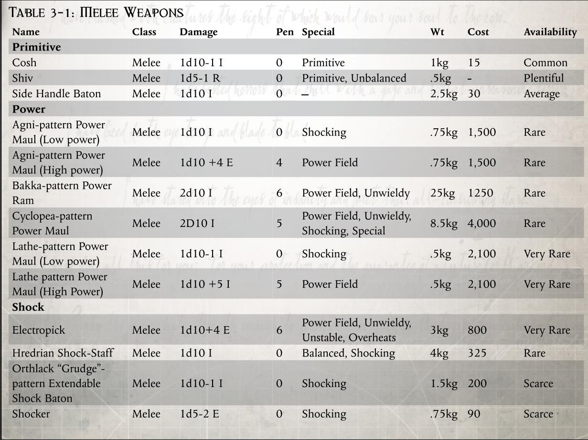
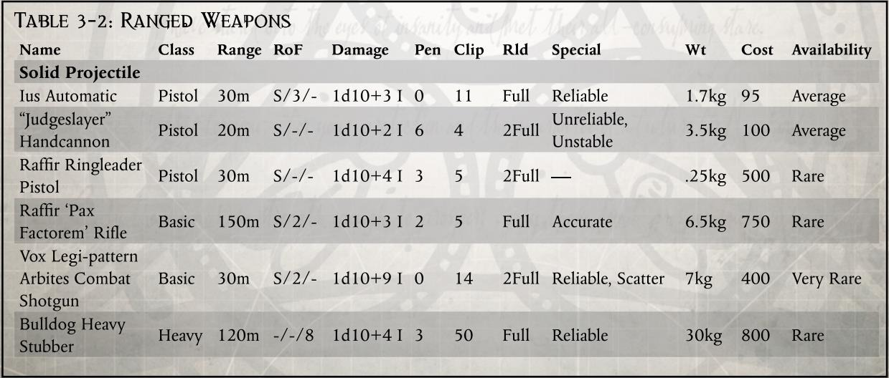
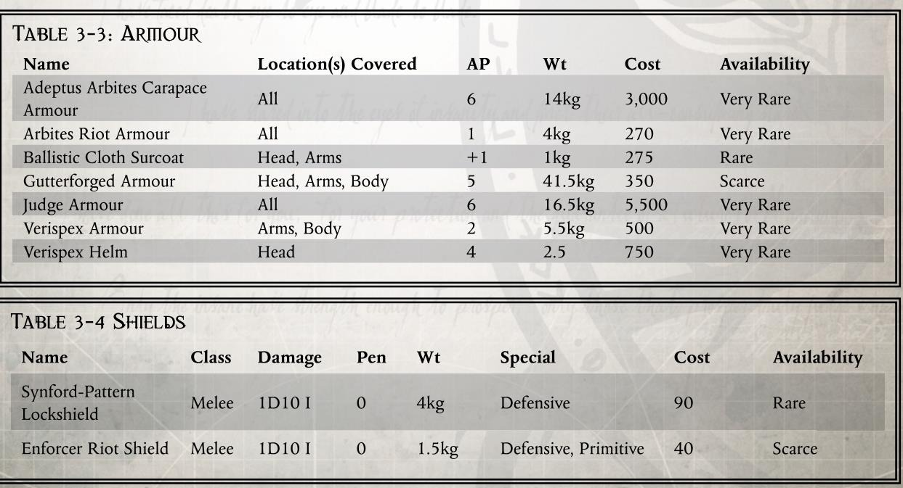
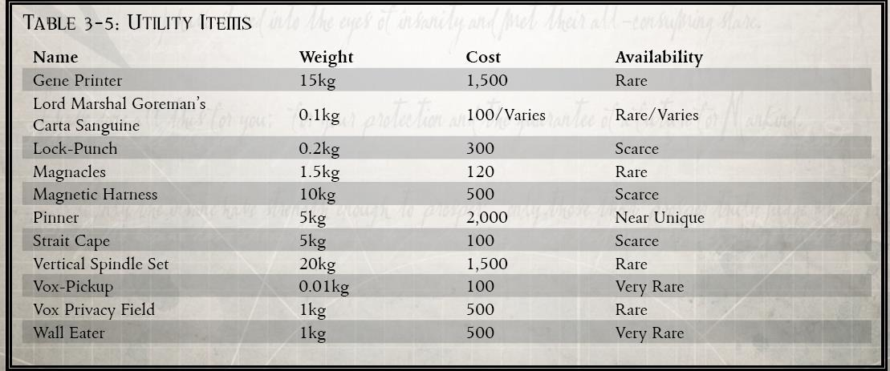

这种动力撞锤主体是一根沉重的钢管，两侧各有一对长柄。管内是一个活塞状的分解立场装置，活塞的头部通常被雕刻成类似于帝国天鹰的形状。这些工具是为在卡里克（Karrik）和其他重力较高星球使用而制作的，因为高重力世界下的门和墙壁通常都更为坚固。巴卡型撞锤通常由两名 仲裁官（Arbitrator）手持，挥向一扇门或者一面墙时其中的活塞就会被推动向前，闪烁着分解立场的闪光。这种武器的威力足以将大多数门的门闩轰开，也能在几秒钟内将坚固的砖墙击出大洞。虽然理论上这种武器可以用于战斗，但它并不是为此而设计的——它的主要用途是作为破拆工具。在近战中使用该武器进行的所有武器技能检定都受到-20 惩罚，以体现它的笨重。不过，撞锤对无生命的物件或者结构（如门和墙）会造成双倍伤害。除非 GM 出于特殊的原因希望阻止玩家进入建筑物，否则该武器应该可以在瞬间突破进入大多数普通建筑物。
这种不寻常的武器（仅在卡利西斯星区按需制作）是一种轻巧、纤细、优雅的动力槌，有一个带尖刺的护手和一个细长、没有配重的槌柄。它的使用方式更像是一把剑而不是一把槌，这让一些惯用槌的使用者非常沮丧，对于它的大部分批评也集中在难以掌握上。然而，驻扎在拉斯世界的 仲裁官们发现，拉斯型动力槌纤细的设计在铸造世界繁复狭窄的走廊中极其有效。那些花了很长时间并且熟练掌握了这种动力槌的人们宣称这是所有动力槌中最优秀的一种。拉斯型动力槌纤细的外表会让人误以为它缺乏杀伤力，但是这只是种误导，它的分解立场足以对目标造成和其他型号一样的可怕伤害。
拉斯型动力槌制作精良且平衡性极佳，在尝试招架近战攻击时可在武器技能检定中获得 +5 的加值。
经常遭遇身披重型装甲的仲裁者或执法官的罪犯往往会想方设法穿透他们的防御。一个很好的例子是 812.M41 瑟菲瑞斯二号星（Sepheris Secundus）上的古尔矿场（Ghul Mine）矿工起义，当时变种人起义者成功地包围并杀死了一小支法务官巡逻队，他们使用的武器配备了从采矿钻机上拆卸下来的经过重度改装的干扰立场（disruptor field）。由于法务官最后用神经毒气清理了叛乱的古尔矿场，这些武器的样品现在已经很少了，但幸存下来的样品现在在卡利西斯黑市上价格不菲。
这些不寻常的武器是赫瑞德林（herdrin）的贵族执法者使用的。在这个到处都是持刀暴徒的巢都世界里，这些勇敢的执法者手持优雅的金属杖，在巨大的隧道城市的地下甬道中巡逻，金属杖的两端都装有嗡嗡作响的震击装置。这些本地的执法者已经形成了一种独特的战斗风格：保持在对手一臂距离之外，然后抓准时机猛扑过去，在一瞬间用震击杖将对手打翻在地。
只需轻轻一甩，该武器就能从一根长度不超过一只手、易于隐藏的小棍子伸长为一根 18 英寸长的细长棍子。该武器包含一个微小的震击装置，可以发出五次电流然后就需要充电才能继续使用。这种武器在卧底调查员中很常见，他们希望自己的猎物能活下来接受审讯，偶尔也会出现在审判庭等更加神秘的组织的武器库中。
电击器是一种小盒子形状的装置，一端有一对细小的尖刺。当按下盒子背面的按钮时，蓝色的火花会在它们之间划出弧线，使空气中弥漫着臭氧的味道。当电击器被按在受害者裸露的皮肤上时，他们会受到强烈的电击，使他们昏厥并失去反抗能力。电击器源自一种古老的技术，尽管表现方式不尽相同，但是人们一直在使用这种装置。

法务部是一支准军事力量，因此配备了种类繁多的远程武器。他们所掌握的军规级装备之数量可谓臭名昭著，足以成为任何心怀叛意的行星总督面前时刻悬挂的警钟。大多数巢都辖区的军械库所储备的武装，足以装备一支数量是其实际法务部驻军十倍的军队，亦能支撑数月之久的围城战。
法务部指挥官配发给执法官的武器通常会使得一些行星总督都相形见绌，法务部的配发武器囊括了大部分类型，从一般的警棍到军用武器，如爆弹枪或破片手雷。但是有一些武器是理应配发给所有执法官的，艾乌斯连发手枪就属于这一类。尤斯连发手枪通常与法务官常用的霰弹枪一起配备并作为后备武器，这种配置大量应用于卡利西斯星区和辛提拉本地的执法者中。这种武器由铁灰城（Gunmetal）的枪械工匠精心制作，坚固耐用，虽然并不出众，但却非常可靠。尤斯连发手枪通常配发给法务部或者行星本地执法者中的低级干员，其设计旨在做到万无一失，并能经受住会损坏其他枪械的破坏。这些不起眼的武器很多都有数千年的历史，曾在银河系中一些最艰苦的巢都中为一代又一代的执法者服务过。
所有不法分子和违法者都害怕他们的罪恶活动会引起法务官或当地执法者的注意。数以千计被没收的“条子杀手”的设计图挂满了辛提拉的法务部要塞的收容室的墙壁，无声地诉说着几个世纪以来它们造就的谋杀和留下的恶名。所有此类设计的特点都是几乎忽视了使用者的安全，在无视了手枪设计中的所有正常预防措施后制造出的一种对使用者和目标都可能致命的武器。

这种手枪是作为行星什一税的一部分上交给法务部的，苏布里克（Subrique）巢都的拉菲尔氏族工匠将得到了许可使用古代的机械神教设计来制造出了这种武器。拉菲尔“头目”手枪是巨大的、令人生畏的恐怖武器，专为在暴乱的高潮中处决高级目标而设计。这些武器配发给高级法务官，并不是因为它们的准确性或在火拼中的实用性，而是因为它们能对暴民们的造成物理以及心理上的伤害，震慑住大部分暴动者。
铁灰城（Gunmetal City）中的刺客和执法者都部署了狙击手小队，藏身于雕像，管道巢都框架之间的狙击手们监视着巢都里担惊受怕的平民们，并在必要时射杀目标。这些狙击手装备了各种铁灰城本地制造的狙击步枪，包括激光长枪和毒针步枪。然而，许多熟练的步枪手则依赖于更为传统的实弹武器，例如拉菲尔“和平使者”步枪，这是一种大口径半自动步枪，结构坚固，并且在铁灰城极为常见。
法务官的主要武器是战斗霰弹枪。霰弹枪因其强大的阻击力、简易的操作、可靠的性能和威慑力而备受推崇。即使是在神圣泰拉的审判大厅中驻守的那些老派仲裁官（Judge）们，也会在残酷有效的霰弹枪训练中磨练自己，这也是所有法务官战斗训练的基础。
根据当地锻造世界的不同，银河系中不同的分区要塞使用了大量不同设计的霰弹枪。“律法洪音”型霰弹枪在边缘星区的仲裁者中尤为普遍，也是卡利西斯星区仲裁者喜爱的典型武器。“律法洪音”实际上是许多行星执法者使用的霰弹枪设计的大口径本地制造版本，它是一种破坏性和适应性极强的武器，其霰弹大小与星际战士使用的霰弹差不多。与同类霰弹枪相比，该武器体积的增大降低了其弹药容量，同时其威力和适应性仍然高于普通霰弹枪。更高的载弹量让巡逻的仲裁者们可以携带更多种类的霰弹弹药，以便在遇到需要他们干预的情况时提供不同的战术选择。
这种霰弹枪的设计相当超前，它在近战中可以直接作为大型的棍棒挥舞，事实上，它在设计时就明确考虑到了这一用途。此外，该武器的设计还考虑到了最大程度的心理影响，其泵动上膛的声音非常响亮（标准的法务官防暴训练就利用了这一点） 。千百年来，一百名仲裁者同时将武器上膛的声音结束了无数次暴乱。
“律法洪音”霰弹枪在近战中可作为棍棒使用。作为一次完整动作，使用者可以选择手动将一枚霰弹装入特殊设计的管状弹匣。这枚霰弹的类型可以与枪中的其他霰弹不同，但是武器下次开火必须消耗这枚弹药。
尽管许多人误认为法务官只是一支纯粹的警察力量，但他们参与镇压实际上经常牵扯到国家级甚至和整个星球的军队全面交战。法务官向来重视武器的可靠性、战术灵活性和有震慑力的外观，这些品质在斗牛犬重伐木上得到了充分体现。自安茹远征以来，斗牛犬重伐木枪的火力一直没有辜负法务部对它们神圣使命的信任。该武器可以轻松地在弹链或弹匣供弹之间切换，可以毫无问题地接受各种奇特的弹药类型，它们可以被假设在陀螺仪支架上，也可以安装在法务部的犀牛装甲车上。
法务部深知，为了震慑那些受其管辖的亿兆人类，他们必须展现出牢不可破的威严假象。任何软弱的表现，都是对叛乱与异端的邀请，而帝国不会容许这样的失败。正因如此，为了在地方权势集团面前维持自身的强势形象，法务部几乎将其执法活动发展为一种戏剧化的仪式。他们常在最引人注目的区域进行高调巡逻，以求达到最大的心理震慑效果——无论是在总督府邸之外，还是在巢都最黑暗的底巢骨市之中。
在帝国世界维持这种可见存在的关键要素之一，便是“法务官”的形象。在所有帝国公民的认知中，法务官已与其全身动力陶甲融为一体，这种装甲令他们一瞬之间化作无面、威严、冷酷的执法机器。这类装甲的设计不仅意在剥离穿戴者的个体性，还能为其提供出色的物理防护。除星际战士与修女会以外，法务官们所配备的装甲系统堪称帝国仆从中最为优秀的。
相比之下，行星执法者与他们追捕的罪犯所用的护甲系统就要简陋得多，既不坚固，也不高效。执法者通常穿着行星总督规定的制服，不过若能自行选择，他们也多倾向于耐用实用的深色服装。而他们面对的罪犯则穿戴着各式各样能搞到的护具，造型拼凑杂乱、即兴改造，虽然观感粗糙，却偶尔能发挥出意想不到的效果。
法务官的形象就能让罪犯和违法者感到恐惧。而制造法务部标志性的甲壳甲的任务落在了卡利西斯星区的各个世界上。卡利西斯星区的许多锻造世界都负责为其上的辖区要塞制造装备，因此要想破坏供应线，就必须在整个星区发动叛乱。法务部甲壳甲由致密的塑钢板覆盖在一种必须在拉斯世界的轨道零重力制造厂生产的成聚丙烯纤维上制成。卡利西斯星区的法务官甲壳甲的设计是将甲片夹在一起然后贴在在轻便透气的织物外，每一件甲壳甲都是根据法务官的身材比例精心制作的。鉴于它们必须一穿就是几个小时，而且经常是在体力极度消耗的情况下，因此必须轻便舒适，而它在这些方面都做得出人意料的好。甲壳甲完全没有动力装置，但通常会配备一些磁吸带，可将武器和其他装备直接固定在甲壳上，而无需使用笨重的挎带和武器夹。甲壳头盔装有微型通讯器（或称“语音收发器（vox-troc）”），并且在口部有开口，便于语言交流。不过，头盔也可以在几秒钟内密封；而头盔也配备了循环呼吸器，它们不使用时通常用磁铁吸附在腰带上。头盔上还装有偏光镜片，当光线超过一定流明时，偏光镜片会立即做出反应，从而达到完全抵消闪光弹的效果。这种方法的一个有益的副作用是，它使其他人无法看清仲裁员的视线方向。甲壳甲的手部是一种巧妙的装置，在卡利克星法务官的术语中俗称为“铁手”，可以算作缓冲手套。
装甲上有许多磁吸带，可以携带仲裁者的武器和装备。通常情况下，除了基本武器和弹药外，外勤中的法务官还会配备一把装在枪套里的尤斯连发手枪（ius automatic pistol）、三个弹夹的弹药、一个循环呼吸器、一个微型通讯器、一个可手持或迅速连接到任何法务官武器上的发光器（lamp pack）、一把动力槌、两枚手榴弹（任何类型）和两副磁力手铐（magnacles）。盔甲背面有一个大号的磁吸带，可携带一把重量不高于 10kg 的基本武器。
法务官们的日常工作之一就是镇压各种暴乱。从聚集在内政部办公处门口的请愿者暴动到想要从什一税运输机上抢下食物的饥饿暴民，都是无畏的法务官们镇压的对象。当面对大量无组织的，挥舞着砖头、木板和棍子的暴民时，法务官会在他们的甲壳甲外覆盖上一些缓冲材料制成的护板来更好地防护接下来的冲击。这些护板通常被设计成亮色的，作为对暴乱者的明显警告。
镇暴护板是一种简单，有些妨碍行动的缓冲护板，固定在标准法务部甲壳甲的薄弱部位上以应对暴乱。镇暴甲为装备者所有部位增加一点额外护甲，但是仅在对抗冲击伤害时生效。因为它过于笨重，所以在穿着它时角色的敏捷-10。
很多高阶法务官在执行任务时会在甲壳甲外披上一件防弹外套。这种习惯的起源已经难以考证，但是有一种说
法是它来自于神圣泰拉，在那些最神圣的巢都下，腐蚀性的酸雨会把没有保护的甲壳甲腐侵蚀掉色。这些高级的织物制成的外套可以为下面的甲壳甲提供一些保护。
这种外套可以为穿戴者的手臂和躯干提供一点额外护甲，并且可以披在护甲外面。只要它是为穿戴者的护甲和装备量身定做的。
有时，那些最绝望的犯罪者会用他们身边的各种材料拼凑出一种自制的甲壳甲。这些护甲通常非常劣质而且重的难以置信，它们几乎就是毫无设计地把铸铁板粗暴地焊接或者锻打而成，通常出自巢都工人或者铁匠之手。不过，这种护甲有时也惊人的实用。每一年都有新缴获的阴沟佬护甲被擦干血迹陈列在卡利西斯星区法务部要塞的赃物储藏室中。
尽管可以提供不错的防护，这种由脏污钢铁制成的护甲（通常带有一顶带缝桶盔，一对护肩板和前后都有的钢铁“围裙”）非常沉重。任何穿着它的角色的敏捷都会受到-15 的减值。
仲裁官们有权利申请他们所在行星分部的军械库和收容室（cold vault）内的任何武器装备，所以在他们执行任务时都会穿着自己想要的装备。他们中的一些人穿着已经在巡逻中经历了几十年风雨的甲壳甲来表现自己的谦虚，但是他们中的大部分人认为自己作为帝国法律的神圣执行者配得上更正式和优秀的行头。仲裁官们大多穿着可以找到的最优秀的甲壳甲，每一件都由工匠大师打造；以及来来自于人类司法历史不同时期的古老长袍和头饰。仲裁官护甲的外形根据不同的使用者和世界而各有差异，但它们都是为了给一颗星球的人们留下最深刻的敬畏和恐惧而设计的。
仲裁官护甲的防护能力和普通的法务部甲壳甲非常接近，但它还融入了更多华丽的设计来展现（从当地历史的角度来看）法务部的力量和威严。当一位身着仲裁官护甲的仲裁官进行审讯或威吓检定对抗来自他分部所在行星的人时，这些检定获得+5 的加值。
从审判庭借调来的数据交换专家们有着一支种通过多年的专注研究而获得的特殊的洞察力。这些刑侦专家不需要与前线法务官相同标准的防护性护甲，但他们仍与法务官一起行动，所以必须穿着能体现其特殊地位的制服。数据交换专家护甲看起来类似于法务部甲壳甲，但要轻便舒适得多。它包含各种特殊工具和扫描仪，包括鸟卜仪、计时器、组合工具和数据板。此外，护甲上还有专门工具的储藏空间，在实地查找信息（如查看尸体或追踪子弹轨迹）时，可为警觉和医疗检定提供 +10 的加值。
为了分析银河系中各种杀手和刺客留下的令人费解的犯罪现场，数据交换专家们装备了在卡利西斯星区军工厂定制的各种工具。数据交换专家的头盔通常和护甲一起配发，是一种诊断和侦查的装置，类似于装有各种目镜和灯的猎手视觉目镜（prey-sight goggles）。头盔配备了许多偏光透镜和荧光频率来定位血迹和其他体液。朗德星（Landunder）海洋中发现的稀有化学物质还能让 这种头盔分析气味和费洛蒙痕迹，这对于在卡利克星法务官身边工作的数据交换专家来说是一个非常宝贵的工具。许多数据交换专家都想给自己搞到一个这样的头盔，尤其是在与审判庭一起执行任务时。
数据交换专家头盔集成了成像面罩和红外目镜（见核心规则，装备）。此外，数据交换专家头盔还能为搜索和追踪检定提供+10 的加值。
这些透明的圆形盾牌直径约 2 英尺，由轻质聚碳酸酯制成，可以防护冲击伤害并且为其他多种类型的伤害提供有限防护。由于盾牌固定在手腕上，因此与其他保护措施相比，执法者可能更喜欢这种盾牌，因为这样他就

可以腾出手来操作其他设备（如对讲机）或手枪。
这些盾牌可为躯干和一只手臂在对抗来自有原始特性的武器进行的攻击时提供额外 3 护甲，并可为相同部位对抗的所有其他类型攻击时获得 1 护甲。使用执法者防暴盾的侍僧仍可在持握盾牌的那只手中携带和操纵物品，最多可携带手枪大小的武器。
法务官通常在各种行动中使用厚重的陶钢盾牌。这些盾牌呈长方形，单手持握，通常有一个装甲厚实的观察孔，可为使用者提供保护。辛福德型“锁盾"是这种盾牌中比较标准的一种，但有一个容易辨认的特征。
与大多数法务官盾牌一样，锁盾也设计有一个防弹玻璃观察孔和一个可以让手枪和基本武器不受惩罚地开火的射击口。除此之外，它还装有一个与在场最高级仲裁官的语音收发器相连接的高分贝扬声器，使得即使在最震耳欲聋的喧闹声中，高阶仲裁官也能对使用者进行指挥和鞭策。它的两侧都有磁力带，可以用磁力将囚犯直接固定在盾牌上。它最与众不同的特点是能与相邻的锁盾牢固地锁在一起，形成一道装甲墙，仲裁员可以在墙后作为一个整体前进。
锁盾需要单手使用，并为使用者的手臂和躯干提供四点护甲。该盾牌比大多数法务官的盾牌都要高，因此在使用者运动时可额外为头部提供四点护甲，在静止时可额外为腿部提供四点护甲。法务官可以用磁力将盾牌锁定在相邻的盾牌上；在特别致命的暴乱中，法务官可以用它来组成盾墙，让法务官们可以在密集的火网中推进。
法务部并不只是那些穿着黑色响亮胸甲和坚固武器的威严身影。他们是帝皇忠诚的仆从，会使用一切能够猎捕、震慑、镇压或制服堕落之人的工具。
这件紧凑的设备可背负于身，能够（在合理范围内）确认两份生物残留是否来自同一人。法务部真痕队利用此装置，通过遗留在犯罪现场的基因痕迹（毛发、皮肤等）来证明嫌疑人的罪行。虽然许多准罪犯对这种“证据”嗤之以鼻，戈尔曼总长坚称这些设备定期由训练有素的机械修会人员进行维护。
基因打印机本身构造简单，无法与存放于机械神圣祭坛中的神圣欧姆尼塞亚构造体相比。传说这些传奇设备能将朝圣者的基因组解读回远古泰拉，揭示其整条血脉的庞大基因信息。
使用基因打印机需要一次普通（+20）的技术应用检定，以进行适当的科技崇拜仪式。检定成功则可确认两份放入装置中的基因痕迹是否来自同一人。然而，基因打印机的机魂较为简单，主持人可酌情判断复杂的基因因素（基因改造、双胞胎、异形干扰等）是否干扰结果。
这些是戈尔曼总长本人为臭名昭著的罪犯下达的通缉令。尽管这些文件在法务部中并不受欢迎，他们也承认有时确实需要协助来追捕那些极难追踪的罪犯。血状令的引入催生了一大批星际赏金猎人，他们在不同世界间穿梭，搜捕帝国之敌。这些通缉令对卡利西斯判官们而言简直是噩梦，因其所涉及的司法管辖权错综复杂。但在边境蛮荒世界中，这些令状却是最可行的正义体现。
在某些星球上可购买追缉卡利西斯血状令的权利。持有者依法被允许在各帝国星球之间旅行，追捕令状中所列之人，并可携带当地法律许可的武器以协助逮捕。每份血状令的具体费用、条款和效果由主持人裁定。血状令在大多数世界上的稀有度为稀有 Rare，即使是最简单的也至少需花费 100 王座币。然而，一旦血状令的执行条件达成，猎人即可以原价十倍兑换该令。
戈尔曼总长的血状令对于许多赏金猎人而言等同于“卡利西斯通缉榜”。通缉名单（及其伴随罪行）足有四千页之多，装订精美。这些通缉书在多个世界上可供查阅，具体分发则由地方权力决定。
这是一种简单的双手操作圆柱体工具，内嵌从废旧重力板中回收的重力场发生器。爆锁拳的设计初衷是迅速破坏门锁。使用者只需将其顶住锁芯并触发装置，便可引发一场局部重力乱流，将门锁（有时甚至整扇门）撕裂。
但需格外小心：该设备机体极其不稳定，若发生反噬，使用者很可能被直接掀飞——甚至撞上天花板。
最常见的爆锁拳由在萨布里克巢都早已被遗忘的走廊中盗取的重力板拼装而成。传闻整座巢都建于艘游侠舰的残骸之上，不过更理性的说法则认为，那是为了抵御深海压力而在巢都深层安装了重力设备。
使用方法：
使用爆锁拳为整轮动作。使用者需将装置枪口顶住门锁，并进行一次普通（+0）技术应用（Tech-Use）检定。
• 检定成功：可摧毁装甲值（AP）16 或更低的普通门锁（例如薄型混凝土、铁制或钢制门锁），较脆弱的门（如木门）则会整体炸裂。高等级门（如亚当钢舱口或陶钢金库门）不受影响。
• 失败度达 4 个等级以上：装置发生故障，将使用者抛飞 2d10 米远，并按相应高度坠落处理伤害。若使用者站在台阶、平台等边缘上，后果可能更为严重。
制作工艺影响：
• 优秀（Good Craftsmanship）：在失败度达 5 个等级时才会发生反噬。
• 极品（Best Craftsmanship）：需失败度达 6 个等级才会反噬。
• 劣质（Poor Craftsmanship）：技术应用检定–10 罚值。
这些是磁性手铐——一个由硬化与淬火钢构成的开合式圆环，可扣于嫌疑人手腕并以强力磁铁锁死。这些磁铁可由钥匙持有者操控的按钮控制，允许迅速将嫌犯固定于路灯杆、犀牛装甲运兵车或其他金属物体上。这些磁力极强，几乎无法将其从彼此或附着物上分离。法务部官员通常随身携带至少两副磁铐，大多数法务部载具中更存有数十副。
磁铐是目前手铐的最先进与最坚固版本。任何逃脱尝试（特技、入侵或纯力量）检定皆附带极难（–30）的修正，且所需时间为正常的三倍。
磁性背带广泛应用于卡利西斯世界，那些巢都构造不常见或金属表面稀少之地，或在法务官需单独行动时格外有用。最早版本为简单的金属板，绑于艾坎索斯的法务官手臂、腿部和躯干上，后经卡利西斯技术神甫改良升级。
每块磁板可单独启闭，能固定武器、装备，甚至嫌犯。轻触板中央可设定压力即释或需输入指令释放。
拥有磁性背带的法务官视为获得即时备战专长，适用于背带上的储存物品。此外，若法务官已具有即时备战专长，则可在同一回合内以自由动作收纳武器装备。
辛提拉的法务部广泛使用磁性卡扣和枪套来携带装备与固定犯人。为了干扰他们的行动，卡斯巴利卡的一些派系投资制造了一种称为扰磁器的装置。这些线圈发生器发出波动的带电磁场。虽然它自身不会磁化物体，但却会极大增强现有磁铁的磁力。
一旦启动，装置会在 30 米范围内影响所有磁性装置，持续 2d10 轮，超级充能。试图将磁铁从附着面上分离，必须进行一次地狱级（–60）力量检定。
优秀和极品品质版本的扰磁器分别将作用半径增加 5 米和 10 米。劣质版本则将半径减少 10 米。
卡利西斯区域的惩罚官深知，要摧毁最顽固的罪犯，就必须全面掌控其囚禁过程的每一个环节。束缚披风正是实现这一目标的重要初步手段。这是一种由坚韧合成帆布制成的重型囊袋，用来笼罩嫌疑人。嫌疑人的四肢被拉出袋外，并通过内部链条捆绑，头部则罩上一体式头罩，其中包含眼罩、口塞和耳罩。
在完全失去反抗能力的状态下，嫌疑人将被挂在法务部载具外部的挂钩与夹具上，被拖行而去，接受惩罚官的“招待”。
试图从束缚披风中逃脱的所有检定（特技、入侵或纯力量）都必须以极难（–30）修正进行，所需时间为正常的五倍。在囚禁期间，嫌疑人无法使用任何依赖视力、听觉、声音、四肢或手部的技能与天赋。
巢都外墙往往是令人绝望的深渊，强风与毒气常伴其间，一个倒霉蛋可能会摔落数公里，最后在装甲外壳上粉身碎骨。然而，这种恶劣环境反而为进入限制区域提供了“便利”。为适应巢都外壳作业，磁爪套组应运而生。据说此装置最早由远在希拉克西斯的垂直巢都的苦工科技奴隶发明，后随宪章舰长传入卡利西斯星区。如今，多个巢都中的回收者和苦工奴隶已能制造出不同型号的磁爪套组。在行
走于数百米高壳上的安布伦和席贝柳斯等地格外流行。而在塔苏斯巢都则因有着被灼热沙漠高温加热的外壳，几乎无人使用。
磁爪套组由加固手套与靴子组成，通过连接线与电源线连至背部装置。手套与鞋尖上嵌有钝形电磁板，按压金属表面时激活，拉起时按照特定方式断磁。此外，这些板可与装置分离，使使用者得以借助亚当钢编织的单线垂降，最多可脱离四点（双手双脚）。使用者可不依赖攀爬技能，以其标准速度的25%沿铁磁表面（如铁合金）攀爬，甚至倒挂行进。但金属与金属摩擦声仍会造成–5 隐秘移动检定惩罚。断开磁板后，使用者可垂降最多 50 米。
优秀版本具内建压缩发射器，可将磁板发射至远处并将使用者拉近。该动作为一次半动作，需进行一次普通（+0）射击技能检定，若目标巨大（如整面墙），主持人可给予体型修正，甚至免检。极品版本板面带有单纤毛，可嵌入任何表面，允许使用者攀爬所有材质。劣质版本则无可脱离磁板或垂降线功能。
这些小型装置呈黑色方块，不比孩童指节大，是遗落时代的科技奇迹。可监听半径 10 米内的任何谈话。设备可录制最多 100 小时对话，或将其分段加密实时发送至接收终端。
法务部广泛使用这种装置收集罪证。执法者也使用类似设备，但通常不如其先进且更易被察觉。审判庭亦尤为喜爱此类装置。
激活音阵接收器为一次整轮动作，操作极为简便，无需技术应用检定。若要侦测该装置则较为困难：搜索者必须进行一次对抗搜索检定，对手使用其隐藏装置时的智力检定。GM 可酌情加入修正项，例如是否具备检测突发信号的装备，或是否事先知晓该地点可能藏有接收器。
在卡斯巴利卡犯罪贵族中极为抢手，这些能量场可制造一道不可穿透光与声音的闪耀力场圆顶，用于防止法务部与执法者窥探，以便更顺利地进行地下交易。
隐私场生成直径 10 英尺的蓝色闪光圆顶，无法穿透或偷听。该场域不具任何物理防护，仅提供视觉遮掩。每个装置独一无二，通常安装在小型手提箱或伺服颅骨上。
制造一种只腐蚀生物组织的强酸并不稀奇，但能创制一种不伤肌肤却能吞噬石料与钢铁的酸液则大为不同。储存这种酸液的难度甚至高于其制作。
在巢都世界朗德上，著名化学大师与贤者马里斯·帕斯库尔自该星化学海中提炼出此种酸液。然而其最具创意之处却是容器设计——他基因改造了一种类虫巢都害虫，使其体内能自然产生酸液并通过颚部喷吐。
他在被地方执法者逮捕并处决前，将成果卖给了当地犯罪集团，罪名是制造可能导致巢都结构灾难的不稳定材料。
啃墙虫形似人拇指大小的节肢生物。使用时，操作者挤压其鼓胀的胸腔，将酸液从其颚部压出至目标表面。一只虫可喷涂两米长线条的酸液，能腐蚀达 30 厘米厚的亚当钢后自然耗尽。补充酸液需耗时一周。
对人类无害，但必须使用木质、骨质或象牙制笼饲养，否则其将腐蚀掉牢笼。
此物无劣质、优秀或极品版本。

卡利西斯星区的法务部深知，违禁药物不仅会损害征税程序，甚至在最严重的情况下，会引发大规模的异端行为，进而需要动用军事手段或审判庭介入处理。尽管在整个星区制造的药物种类多得近乎无法计数，真正被帝国批准供公民使用的却寥寥无几。其余的药物，持有即属非法，贩运更是异端行径。
在德鲁苏斯远征区的许多下巢聚会中都能看到“清醒”的使用，它能让狂欢者在几乎没有影响的情况下大量饮酒，甚至能抵御大多数常见的毒药。它是由一种原产于蒙拉斯（Monrass）世界的植物制成的，咀嚼这种焦油状的口香糖可以预防毒素和醉酒，尽管它的味道非常苦涩。
服用“清醒”后，使用者会获得颓废者天赋，并在任何对抗昏迷或毒药影响的坚韧检定中获得+30 的加值。服用者在大约 3 小时后总是会感到强烈的偏头痛，并且必须在 1d5 小时内避免从事体力劳动。
埃泽尔或埃泽（eaze）是一种强效抑制剂，通过漫游港（port wander）从未知地区走私入境；有传言称其来源可能是异形。使用者报告说，在它的影响下，即使是最堕落或最非法的行为也会变得更加自在，几乎不会有良心不安的感觉，甚至会失去对帝皇的虔诚之心。巢都贵族在参加那些最下流和堕落的派对前会使用埃泽尔。王座的特工可能会用它来锻炼自己，以适应最困难的卧底工作，在这种工作中，对异端景象稍有迟疑就可能招致杀身之祸。反复使用似乎会增强效果，有些人就永远陷入了这种状态。他们通常会意识到自己的危险，并试图向同伴掩饰自己的新行为。还有一些人可能干脆放弃原来的生活，成为最恶劣的堕落者，他们的暴行在整个扇区都臭名昭著。当受到埃泽尔的影响时，使用者将完全无视道德的约束并且必须在普通（+10）意志检定中成功才能无视自己的卑劣本能。效果持续 1d5 小时，最近一周内每服用一次，效果持续时间+1 小时。
尽管在这颗封建星球上使用这种药物十分危险，但它还是从艾尔罗斯（elro）世界走私而来。它有很多名字，比如萨姆森四号（Samson IV）巢都中的 "纯脑"，但无论叫什么名字，使用者都能辨认出蓝色液体的油腻感。注射后，它作用于神经通道和大脑，导致使用者变得固执。
在 2d5 小时内任何作用于使用者神经药物的正常效果都会-30，但使用者在此期间的所有意志检定都会受到-20 的惩罚。